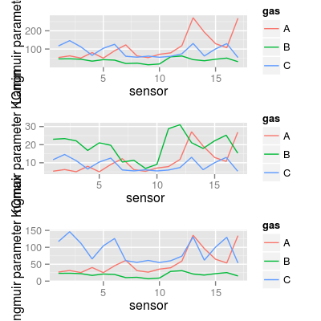

Dataset UNIMANsorption.
Description
The dataset contains the statistics on modeling the Langmuir isotherm on 17 UNIMAN sensors and 3 pure analytes at different concentration levels.
Details
Indeed, the isotherm extends the Langmuir isotherm for a single gas under a simplified assumption that molecules of the analytes in mixture do not interact with each other. Such property allows us to describe the adsorption process in the gas mixture explicitly by computing a single-adsorption Langmuir isotherm per analyte.
We estimate the parameters of the Langmuir isotherm by
fitting a linear model based on the short-term UNIMAN
dataset UNIMANshort. The resulted
coefficients of determination R2 of the models are
not below than 0.973 for analyte C, and slightly worse
for analytes A and B giving the minimum value 0.779.
The datasets has the only variable UNIMANsorption
of class list, that in turn stores the variable
qkc of the class array of three dimensions.
The first dimension encodes a sensor, and the second
encodes a gas. The third dimension represent four
parameters extracted from the Langmuir model:
K |
Sorption affinity in terms of the Langmuir isotherm. |
Q |
Sorption
capacity in terms of the Langmuir isotherm (not used in
SorptionModel). |
KCmin |
The
term KC in the dominator of the isotherm at
minimal concentration level (analyte contribution in a
mixture). |
KCmax |
The term KCmax in
the dominator of the isotherm at maximum concentration
level (analyte contribution in a mixture). |
Examples
data(UNIMANsorption, package="chemosensors") # print the list of loaded data variables str(UNIMANsorption)List of 1 $ qkc: num [1:17, 1:3, 1:4] 10.02 9.51 9.52 6.57 9.19 ... ..- attr(*, "dimnames")=List of 3 .. ..$ : chr [1:17] "1" "2" "3" "4" ... .. ..$ : chr [1:3] "A" "B" "C" .. ..$ : chr [1:4] "Q" "K" "KCmin" "KCmax"dim(UNIMANsorption$qkc)[1] 17 3 4str(UNIMANsorption$qkc)num [1:17, 1:3, 1:4] 10.02 9.51 9.52 6.57 9.19 ... - attr(*, "dimnames")=List of 3 ..$ : chr [1:17] "1" "2" "3" "4" ... ..$ : chr [1:3] "A" "B" "C" ..$ : chr [1:4] "Q" "K" "KCmin" "KCmax"### Langmuir parameter K K <- UNIMANsorption$qkc[, , "K"] mf <- melt(K, varnames = c("sensor", "gas")) p1 <- qplot(sensor, value, data = mf, geom = "line", color = gas) + ylab("Langmuir parameter K") p1p2 <- qplot(sensor, value, data = mf, geom = "bar", stat = "identity") + facet_grid(gas ~ ., scale = "free_y") + ylab("Langmuir parameter K") p2### Langmuir parameter KCmin KCmin <- UNIMANsorption$qkc[, , "KCmin"] mf <- melt(KCmin, varnames = c("sensor", "gas")) p3 <- qplot(sensor, value, data = mf, geom = "line", color = gas) + ylab("Langmuir parameter KCmin") p3p4 <- qplot(sensor, value, data = mf, geom = "bar", stat = "identity") + facet_grid(gas ~ .) + ylab("Langmuir parameter KCmin") p4### Langmuir parameter KCmax KCmax <- UNIMANsorption$qkc[, , "KCmax"] mf <- melt(KCmax, varnames = c("sensor", "gas")) p5 <- qplot(sensor, value, data = mf, geom = "line", color = gas) + ylab("Langmuir parameter KCmax") p5
p6 <- qplot(sensor, value, data = mf, geom = "bar", stat = "identity") + facet_grid(gas ~ .) + ylab("Langmuir parameter KCmax") p6
### summary plot for K* require(gridExtra) grid.arrange(p1, p3, p5, ncol = 1)
### plot to group sensors based on affinities A vs. C df <- as.data.frame(K) df <- mutate(df, sensor = 1:nrow(df), sensor.group = ifelse(A > C, "More affinity to A", "More affinity to C")) mf <- melt(K, varnames = c("sensor", "gas")) p7 <- ggplot(mf, aes(x = factor(sensor), y = value, fill = gas)) + geom_bar(position = "dodge") + xlab("sensor") + ylab("Langmuir parameter K") p7Mapping a variable to y and also using stat="bin". With stat="bin", it will attempt to set the y value to the count of cases in each group. This can result in unexpected behavior and will not be allowed in a future version of ggplot2. If you want y to represent counts of cases, use stat="bin" and don't map a variable to y. If you want y to represent values in the data, use stat="identity". See ?geom_bar for examples. (Deprecated; last used in version 0.9.2)p8 <- ggplot(df, aes(reorder(x = factor(sensor), A - C), y = A - C, fill = sensor.group)) + geom_bar(position = "identity") + coord_flip() + xlab("sensor") + ylab("Difference in K between A and C") p8Mapping a variable to y and also using stat="bin". With stat="bin", it will attempt to set the y value to the count of cases in each group. This can result in unexpected behavior and will not be allowed in a future version of ggplot2. If you want y to represent counts of cases, use stat="bin" and don't map a variable to y. If you want y to represent values in the data, use stat="identity". See ?geom_bar for examples. (Deprecated; last used in version 0.9.2)
### UNIMAN affinities K in polar plot mf <- melt(UNIMANsorption$qkc[, , "K"], varnames = c("sensor", "gas")) p9 <- qplot(sensor, value, color = gas, data = mf, geom = "line") + coord_polar() p9


See also
SorptionModel